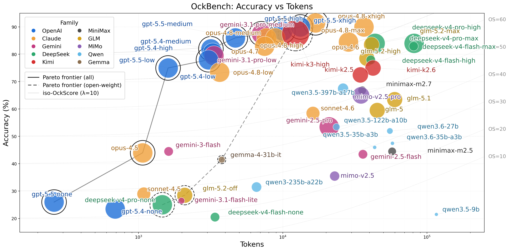

"Entities must not be multiplied beyond necessity." — The Principle of Ockham's Razor
Large Language Models (LLMs) like GPT-5, Gemini 3, and Claude serve as the frontier of automated intelligence, fueled by reasoning techniques like Chain of Thought (CoT). As the field embraces test-time compute scaling, models are increasingly trained to generate extensive token chains to tackle tougher problems. However, this massive inflation of decoding tokens introduces a critical bottleneck: solving just six problems in the International Olympiad in Informatics can now take over ten hours, and complex mathematical challenges frequently explode into millions of tokens.
While the community celebrates gains in reasoning capability, prevailing benchmarks like HELM and Chatbot Arena focus almost exclusively on output quality, ignoring this token efficiency crisis. In reality, many models consume vastly more tokens than necessary to reach the correct answer. Two models reaching the same accuracy can differ by more than 25× in tokens generated — one answering in ~1,600 tokens where another spends ~42,000. As accuracy on standard tasks approaches saturation, tokens must be treated as a cost — not a free resource.
We introduce OckBench, the first model- and hardware-agnostic benchmark that jointly measures accuracy and token efficiency. Our key contributions include:
Per-Token Intelligence: We introduce a new evaluation dimension — a superior model must not only achieve high accuracy but do so with minimal token consumption
OckBench & OckScore: A benchmark with a novel Differentiation Filter that isolates tasks exposing the efficiency gap, paired with a unified metric that rewards high accuracy achieved with fewer tokens
The Overthinking Tax: We formally quantify how smaller models often incur paradoxically higher deployment costs due to excessive verbose reasoning chains
Optimization Pathways: We demonstrate that efficiency is tractable — both training-free model interpolation and difficulty-aware RL significantly improve OckScore
Through extensive evaluations on 37 frontier and open-source models, we find that top open-source models have nearly closed the accuracy gap but consume up to 26× more tokens than commercial counterparts for comparable accuracy. Meanwhile, frontier commercial models are rapidly co-optimizing both dimensions, validating Per-Token Intelligence as the next key axis of LLM evaluation.

Accuracy vs. Average Tokens across 37 evaluated models. Models in the upper-left corner are ideal. The Pareto frontier is dominated by commercial models; open-source models cluster to the right.
OpenAI Owns the Frontier
GPT-5.5 (medium) tops OckBench at an OckScore of 82.2 — 86% accuracy in just 4,692 tokens. The top eight settings are all GPT-5.x or Claude Opus; no open-weight model reaches the top ten.
Open vs. Closed Gap
Kimi-K2.6 matches GPT-5.5 (low) at 75.0% accuracy but spends 26× more tokens (42,243 vs 1,603). Open weights have closed the accuracy gap — not the per-token-intelligence gap.
The Overthinking Tax
In the Qwen3.5 family, the 9B model burns 116,222 tokens for 21.5% accuracy, while the 397B model scores 67.5% using 4.4× fewer tokens. Bigger models are both smarter and leaner.
Leaderboard
Performance of various LLMs on OckBench (Selected) — 200 problems (100 math + 60 coding + 40 science). Models are ranked by OckScore = Accuracy − 10 × ln(AvgTokens / 10,000 + 1) — higher is better. All models evaluated single-shot with greedy decoding (temperature = 0); math accuracy is graded by an LLM judge.
OckBench provides comprehensive evaluation across multiple dimensions
Questions per Domain
200
Task Domains
3
Source Datasets
8+
Models Evaluated
37
Benchmark Composition
OckBench aggregates tasks across three complementary reasoning domains. Rather than random sampling, we apply the Differentiation Filter: selecting problems where accuracy across models falls within 10%–90% (avoiding floor/ceiling effects) and token variance is maximized — isolating instances that reveal intrinsic efficiency differences.
Mathematics & Reasoning: GSM8K, AIME 2024/2025, OlympiadBench, MATH500, AMO-Bench, and the mathematics subset of Humanity's Last Exam — spanning grade-school arithmetic to competition-level number theory.
Software Engineering: A lightweight variant of MBPP and LiveCodeBench, assessing practical code generation and planning skills verified via unit test execution.
Scientific Reasoning: ScienceQA, MMLU (STEM subsets), and GPQA-Diamond, testing knowledge-constrained reasoning and concision under technical load.
Example Tasks
Sample problems from OckBench's math, coding, and science domains
These examples illustrate the types of problems where token efficiency varies significantly across models.
Math Problem (GSM8K)
Question: A store sells notebooks for $3 each. If you buy more than 10, you get a 20% discount on the total price. How much would it cost to buy 15 notebooks?
Domain: Mathematics | Source: GSM8K
$3 × 15 × 0.8 = $36 — a 3-second mental calculation. Yet some reasoning models spend 2,000+ tokens setting up formal equations, double-checking edge cases, and re-reading the problem before arriving at the obvious answer.
Math Problem (AIME)
Question: Find the number of ordered pairs (a,b) of integers such that a² + b² = 2024 and both a and b are positive.
Domain: Mathematics | Source: AIME 2024
Efficient models notice 2024 = 4 × 506 and apply modular arithmetic to eliminate large search spaces in a few steps. Verbose models enumerate all 44² candidate pairs one by one — correct eventually, but at 10× the token cost.
Coding Problem (MBPP)
Task: Write a function to find the longest common subsequence of two strings. For example, lcs("ABCDGH", "AEDFHR") should return 3 (the LCS is "ADH").
Domain: Coding | Source: MBPP variant
A clean DP solution is ~10 lines. But many models first write a recursive solution, identify the redundancy, rewrite with memoization, then pivot to bottom-up — producing correct code buried under 800 tokens of self-tutoring.
Science Problem (GPQA-Diamond)
Question: A molecule undergoes a photochemical reaction in which it absorbs a photon and transitions to an excited state. If the excited state has a lifetime of 10 ns, what is the natural linewidth (in Hz) of the corresponding spectral line?
Efficient models recall Δν = 1/(2πτ) and plug in τ = 10 ns for an instant answer. Overthinking models re-derive the time-energy uncertainty relation from first principles — impressively thorough, but it's a textbook formula lookup.
Key Findings
OpenAI owns the efficiency frontier: GPT-5.5 (medium) tops OckBench with an OckScore of 82.15 — 86.0% accuracy in just 4,692 tokens. The top eight settings are all GPT-5.x or Claude Opus, and no open-weight model reaches the top ten.
Open-source accuracy ≈ commercial, but efficiency lags: Kimi-K2.6 matches GPT-5.5 (low) at 75.0% accuracy yet spends 26× more tokens (42,243 vs 1,603); DeepSeek-V4-Flash edges out GPT-5.4 (medium) on accuracy (82.5% vs 82.0%) but again at ~26× the tokens. The accuracy gap has nearly closed; the per-token-intelligence gap has not.
The Overthinking Tax: In the Qwen3.5 family, larger models are both smarter and leaner — Qwen3.5-9B burns 116,222 tokens for 21.5% accuracy (last place at OckScore −3.85), while Qwen3.5-397B-A17B reaches 67.5% using 4.4× fewer tokens. Smaller models over-generate to compensate for lower capacity.
More thinking isn't always worth it: Sweeping GPT-5.5's reasoning effort lifts raw accuracy monotonically (none 26% → xhigh 90%), but OckScore peaks at medium (82.15) and falls at high/xhigh — the final +4 accuracy points (86% → 90%) cost 2.8× the tokens (4,692 → 13,271).
Frontier generations co-optimize both axes: Claude Opus 4.7 nearly matches 4.6's accuracy (83.0% vs 84.5%) at 3.8× fewer tokens (7,481 vs 28,582), lifting OckScore 71.0 → 77.4; Gemini 3.1 Pro improves on 2.5 Pro by +22.5 accuracy points and 6.4× fewer tokens. Each generation pushes up-and-left.
Verbosity can sink a capable model: MiniMax-M2.5 answers 44.5% correctly but, at 57,346 tokens, scores below GPT-5.5 with reasoning off (26.0% accuracy, 260 tokens) on OckScore (25.43 vs 25.74). Token cost — not correctness alone — decides deployment value.
Citation
If you find OckBench useful for your research, please cite our work
@article{du2025ockbench,
title={OckBench: Measuring the Efficiency of LLM Reasoning},
author={Du, Zheng and Kang, Hao and Han, Song and Krishna, Tushar and Zhu, Ligeng},
journal={arXiv preprint arXiv:2511.05722},
year={2025}
}